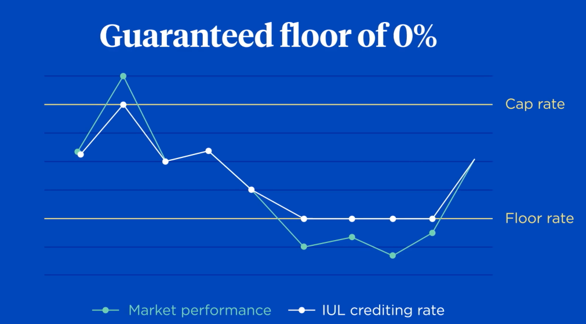
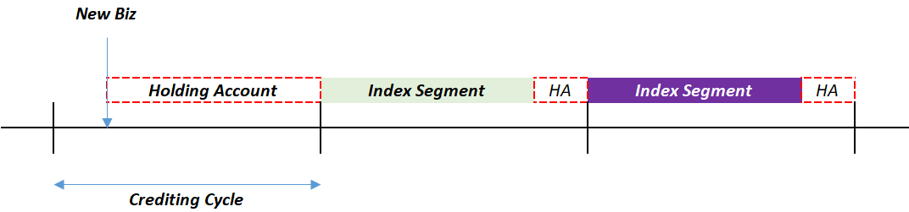
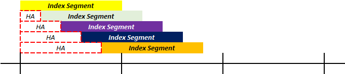
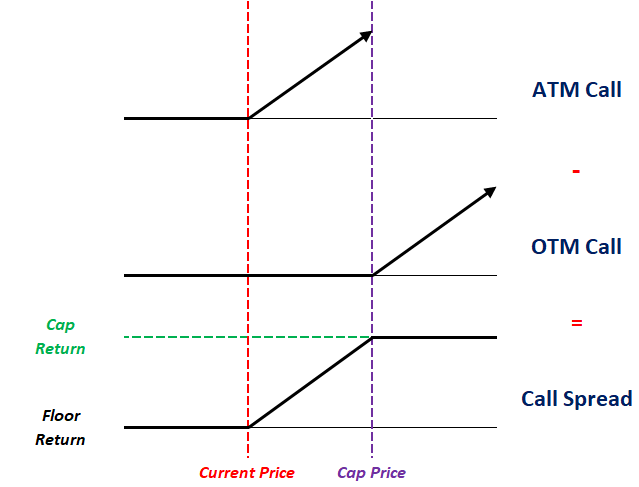

Indexed Universal Life¶
Indexed Universal Life (IUL) is the a variant of UL where the crediting rate is based on the return of a specified index (EG. S&P500). The insurer controls the extent to which the rate follows the index through the following crediting parameters:
- Participation Rate - Proportion of index return to use
- Cap Rate - Maximum credited interest, after participation
- Floor Rate - Minimum credited interest, after participation (typically 0)

Tip
High participation rates (>100%) allows relatively low performing indices to also provide a significant return to the policyholder.
Naturally, the expected crediting rate is higher than TUL (equities vs bonds), which results in lower planned premiums for an otherwise equal IUL plan. All other aspects of the plan remain largely the same as TUL.
Index Crediting Mechanisms¶
Index Allocation¶
Policyholders can choose to allocate their funds between a General Account (same as UL) and Index Account. If premiums are allocated entirely to the general account, it effectively becomes a TUL plan. Thus, insurers often require a minimum index allocation.
Most insurers typically offer a range of indices to choose from based on their desired needs:
- Each index
The index account is then broken down into multiple sub-accounts depending on the policyholder’s chosen indices. The crediting rate of each sub-account is based on the return of the corresponding index. Thus, the crediting rate on the entire index account is the premium weighted average of the index returns.
Most insurers typically provide a range of indices, each with their own floor, cap and participation rates. This allows policyholders to allocate their funds based on their desired risk profile.
Index Returns¶
The simplest crediting mechanism is to use the Point-to-Point return methodology, which takes the return based on the index value at the beginning and end of the segment (EG. 15 Jan 2026 to 10th Jan 2027):
However, the above method is exposed to volatility around the crediting date, thus another common but more complicated alternative is to use the Average method, which takes the average daily or monthly index value over the segment period to determine the return:
Monthly sum? Volatility hurts average method more
The above two are the most common methods. There are many other (exotic) methods of determining the index return:
- Binary Return - If condition is met, fixed index credit, otherwise, 0
- High Watermark - Return based on highest index level over the segment
Note
Another key point of contention is the crediting rate that is used in Policy Illustrations. Similar to Par, this is regulated to prevent insurers from illustrating over-optimistic scenarios.
Index Segments¶
Segments are created to track the amount of premium following a particular index during each crediting cycle. Proceeds from the previous segment is automatically rolled into the new segment.
- The account value for all AVs across all policies tracking a particular index are aggregated into a Segment
- Segments are created on the same days each month. For new business, premiums will be held in a holding account till the next segment creation date
- Segments will typically mature a few days before the next segment date. During the transitions, premiums will be placed in the holding account as well
- Holding accounts typically earn similar rates to the general account of the policy
- The crediting parameters (Par, Floor and Cap) are declared in advance (beginning of segment)

In order to smooth crediting rates, some insurers offer a Premium Spreading feature where premiums are split into equal smaller segments, achieving a dollar cost averaging effect:

Tip
Most insurers will limit the number of segment creations each mont (1-2 times) to ensure that each segment is sufficiently large to keep keep trading costs low during hedging.
Index Hedging¶
In order to provide the IUL payoff, the insurer does NOT actually buy a mutual fund that tracks the index. Due to the crediting floor, if the actual return of the fund drops below the floor rate, the insurer would recognize the difference as a loss. Thus, the insurer instead uses Options to hedge the payoff, ensuring that that regardless of market movements, the desired crediting payoff is achieved:
- Buy (Long) ITM/ATM Call Option (Strike = Current Price)
- Sell (Short) OTM Call Option (Strike = Max Return)
- Combination is known as a Bull Call Spread
Note
When the Index Increases:
- Exercise the long call option to purchase at the initial level and sell at the current level
- Short call assignment to sell at the maximum level; If the market level is lower than the maximum, no assignment is done
- Insurer thus earns the net difference between the maximum price (or current price) and the initial price

The cost of the purchased call will always be higher than the proceeds of the sold call, due to the lower strike price (higher chance of profitability). Thus, there will always be a net cost to build the hedge.
Tip
The participation rate is achieved through leverage by purchasing more units of the call spread. For instance, if the participation rate is 250%, then 2.5 times of the call spread should be purchased.
In order to fund the hedge, the insurer will invest the starting account value into a bond that matures at the next crediting cycle and use the return as their Option Budget:
- Bond - Provides the starting account value on maturity
- Call Spread - Provides the credited interest on maturity
If the option budget is higher than expected (after investment spreads and smoothing considerations), the insurer can pass this down in the form of higher participation rates or higher caps (buying more options or buying more expensive options).
In practice, insurers might not hegde the entire index account; the extent of the hedge is known as the Funding Ratio. This is because some policyholders are expected lapse. However, this makes the hedging lapse supported, which might cause strain if the assumed lapses do not materialize.
Note
Hedging via options eliminates the market risk but introduces counterparty risk.
Interim Values¶
Any claims or withdrawals during a segment will be based on the account value without any interest from the segment, since the interest is only credited at the end. However, some insurers provide Interim Account Values during the segment, which is determined either based on:
- Pro Rated
- Replicating portfolio
Lock? - Manual vs Automatic
Variations¶
Volatility Controlled Indexes¶
Volatility Controlled Indexes (VCI) are synthetic indexes that automatically adjusts the weight between an underlying specified index and a low volatility asset class (EG. Cash, Gold or Fixed Income) to achieve a target volatility level.
The primary purpose of VCIs are to lower the implied volatility of the underlying index, making the position cheaper to hedge.